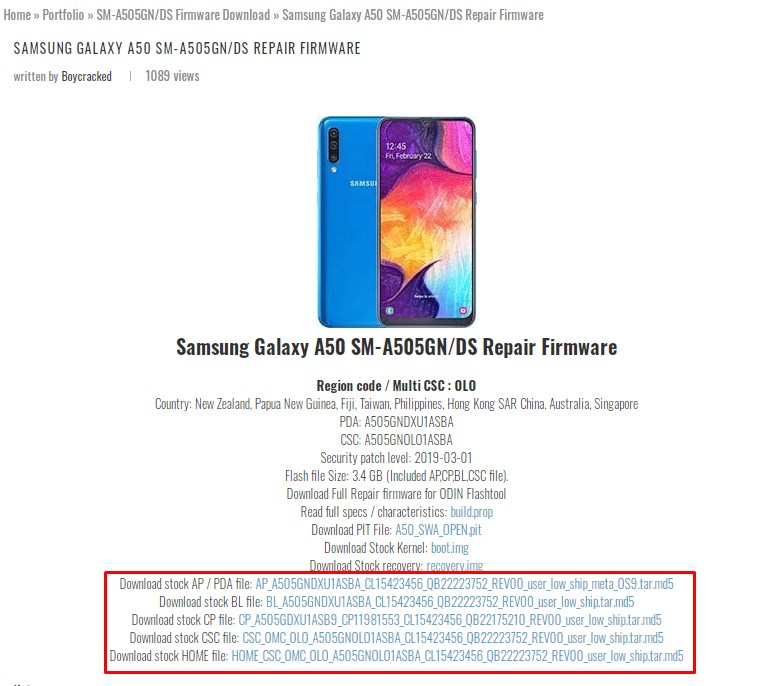
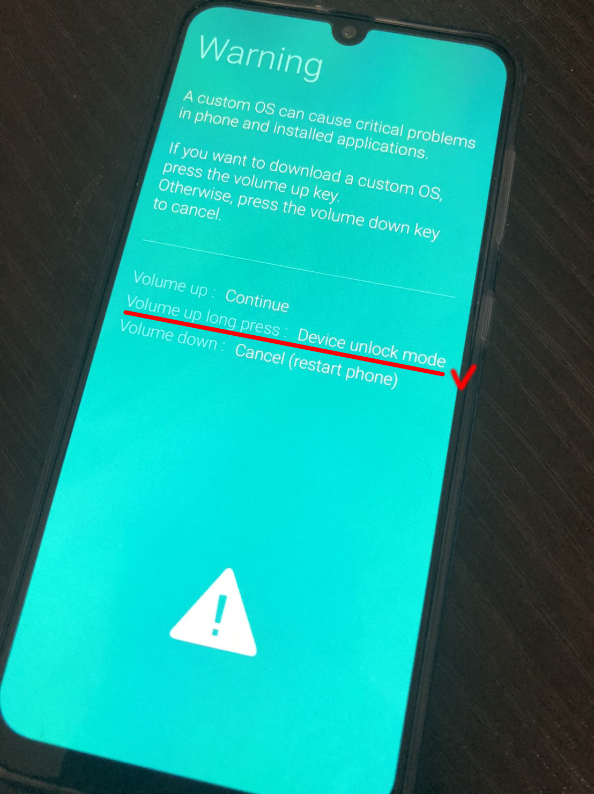
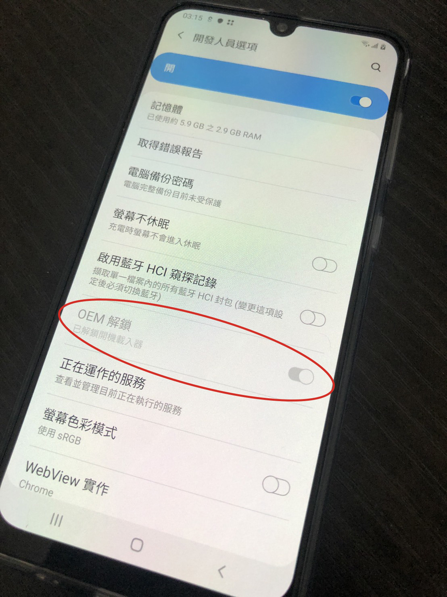
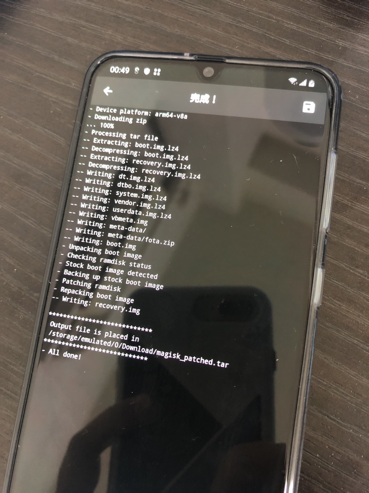
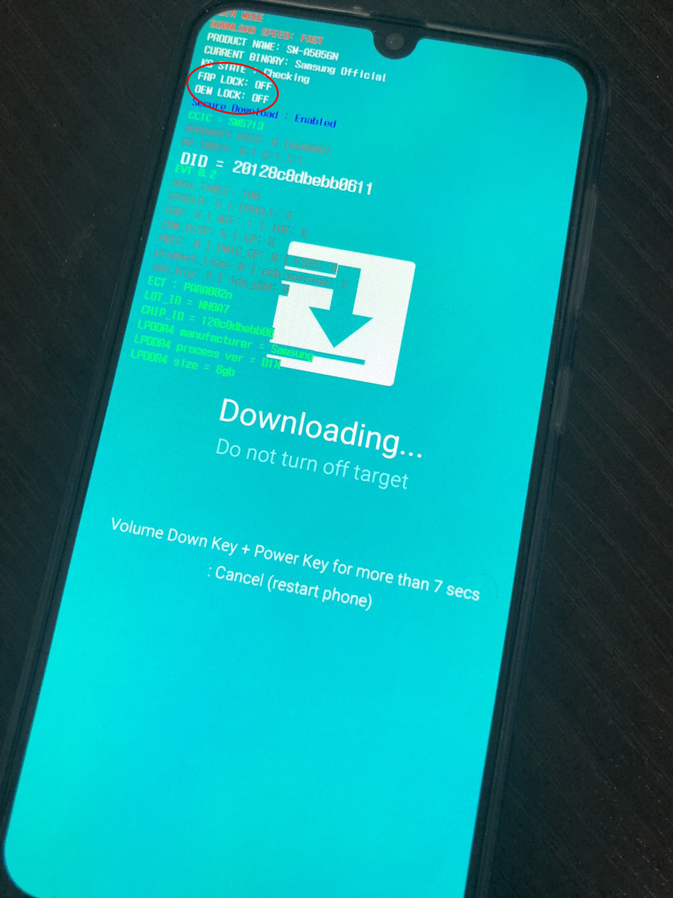
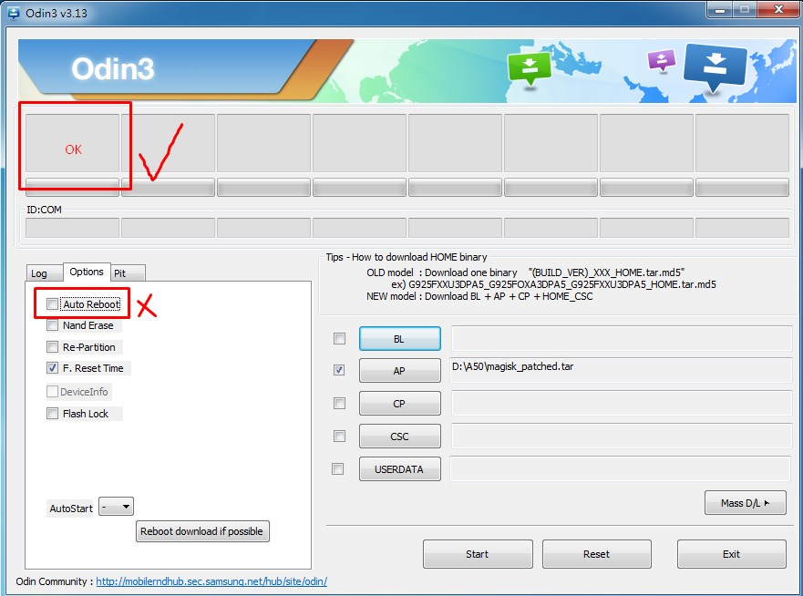
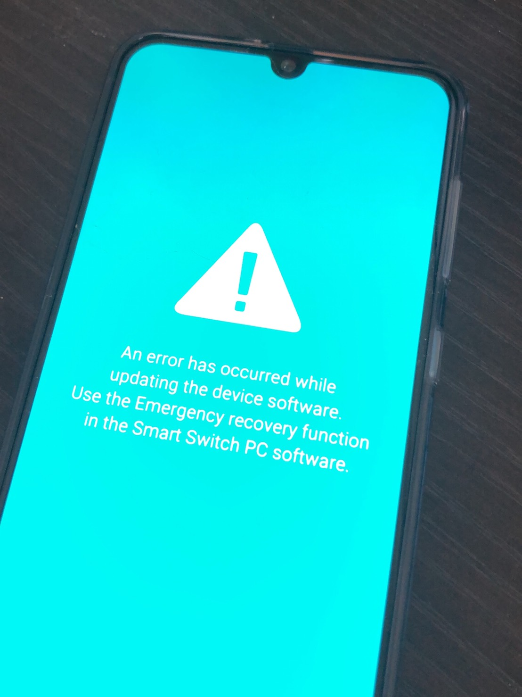
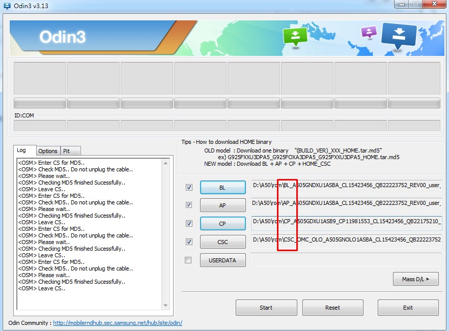
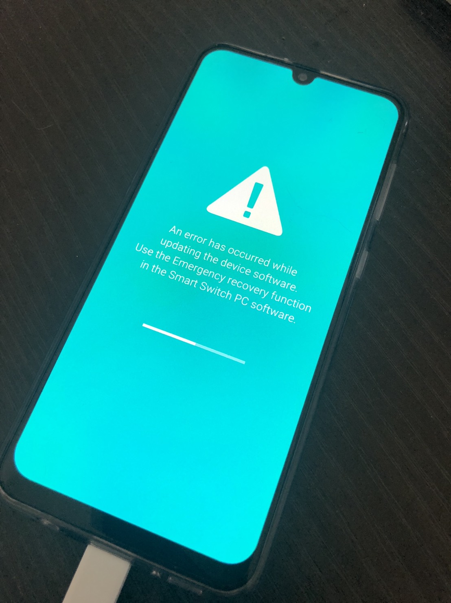
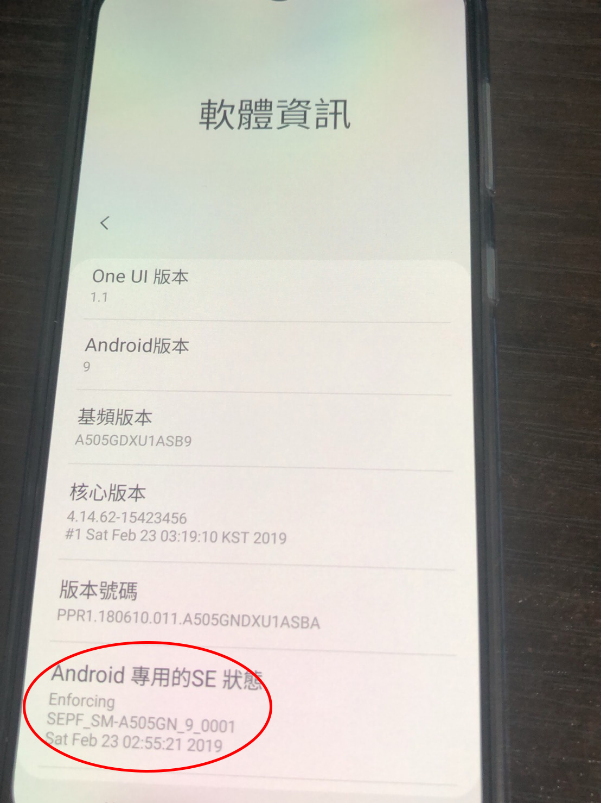

Samsung Galaxy A50 root
ROOT 機型 Samsung Galaxy A50 (SM-A505GN/DS)
請詳閱以下公開說明書再刷機
- 請先備份所有重要資料
- 刷機有風險，失敗手機掛點一概不負責，請仔細考慮清楚
檔案準備
刷機程式 Odin3_v3.13.1
Samsung Galaxy A50 SM-A505GN/DS Repair Firmware
下載 下列這五個 md5 檔案
A50 按鍵組合
強制關機 音量下鍵 + 電源鍵 兩個按著不放約七秒
開啟 download 畫面 在關機模式時 音量上鍵 + 音量下鍵 + 插入type-c線
步驟
OEM 解鎖：設定 > 關於手機 > 軟體資訊 > 版本號碼( 點擊 5~8 次 ) 會跳出
開發者模式> 回到設定
下面會多出開發人員選項接著把 OEM 解鎖 與 USB 偵錯 這兩個選項都打開 接著將手機完全關機完全關機後 按著
音量上鍵 + 音量下鍵 + 插入type-c線選第二個長按音量上鍵
會進入解鎖模式 (忘了拍) 再按一次 `音量上鍵` (註:一旦解鎖 oem 鎖，原本在手機裡的資料就會全部消失。執行前請三思！) 接下來會自動關機又開機開機時會出現
淺藍底白色的安卓機器人畫面 接著會再自動重新開機 出現新機設定
設定完後 再執行一次第一點 把開發者模式打開 再設定一次
會看到 OEM 解鎖 已經變成灰色 不能更改 這時才真的是解鎖成功 ( 如果還沒變灰色 表示失敗 重覆步驟 2 再來一次)再來將
AP_A505GNDXU1ASBA_CL15423456_QB22223752_REV00_user_low_ship_meta_OS9.tar.md5與MagiskManager-v7.3.2.apk這兩支檔案 放到手機裡的 download 資料夾
接著安裝MagiskManager-v7.3.2.apk再來執行MagiskManager如下面影片中的步驟

跑完這個畫面後 在手機的 download 資料夾裡 會多出一個magisk_patched.tar這個檔案，把它存到電腦上 我們要用這個檔案來刷機 然後 將手機完全關機完全關機後 按著
音量上鍵 + 音量下鍵 + 插入type-c線進入畫面淺藍色後 選第一個短按音量上鍵會進入圖中這畫面
確認 OEM LOCK OFF 後 就準備刷機囉
打開
Odin3如圖 切換到 options 記得將auto reboot點掉
再將剛剛做好的magisk_patched.tar拉到 AP 上 接著按 start 開始刷機
成功後會出現 左上角會出現 綠色 pass! 失敗會出現 紅色 fail! (就變磚了) 後續會教如何救接著拔掉傳輸續，按著
音量下鍵 + 電源鍵關機
- 營幕熄掉後 馬上按著
音量上鍵 + 電源鍵 - 看到警告畫面時放開
電源鍵
成功的話會進入原廠的 recovery，如果是出現 SAMSUNG 的 logo 的話，請立刻重新按著音量下鍵和電源鍵7 秒
再重覆第八步驟直到成功進入 recovery
進入 recovery，找到 Wipe data/factory reset (註:音量上下鍵是切換選項、電源鍵則是確定鍵) 將資料重設
重設完成後找到
Reboot system now把手機重新開機 > 按下去的同時請立刻按著電源鍵和音量上鍵 > 出現警告畫面再放開如果成功，手機會自動重新開機兩次，重新開機的過程會有些不自然(像死當那樣重開，屬於正常現象)，會再次出現新機設定的頁面，完成新機設定之前都有可能會自動重開(也是正常現象)
程式集裡應該會多了 magisk manager，如果沒有的話 再安裝一次 MagiskManager-v7.3.2.apk (需要連上網) 出現 已安裝 就表示 root 成功了
影片參考
ps 因影片上所刷的機子不是 A50 所以在一些手勢上會不太一樣 請參考上面的按鍵組合
https://www.youtube.com/watch?v=s2Xp-lQg1xs
救磚
刷機失敗後 營幕如圖

接著打開
Odin3將之前下載的 md5 放上去 照著檔名開頭放 按下 start
按下 start 後 手機會開始跑等重新開機後 手機就救回來了

花了一整天才刷機成功
神魔不能轉的原因 我想應該是 這個問題
要把 se 狀態 從 Enforcing 改成 Permissive
但目前在網路上找到的方法完全改不動 只能看看還有沒有神提供修改過後的 img 檔來刷機了

參考資料
How to Root Galaxy S10, S10e, S10 Plus, or A50! [Exynos Only]
[教學] Galaxy A50 root 安裝教學(magisk) 測試中~